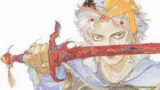

Un espacio para compartir
Contacto
Este proyecto es una práctica personal sobre Final Fantasy. La idea de esta sección es reunir los canales donde, más adelante, se podrán compartir novedades y conversar con otros jugadores.
Redes sociales
Los siguientes espacios muestran las redes que podrían acompañar al sitio. Todavía no hay perfiles oficiales vinculados, por eso no llevan a cuentas externas.

Para compartir publicaciones y novedades del proyecto.

Para mostrar imágenes y contenido visual de la saga.
TikTok
Para compartir clips breves y recomendaciones de juegos.
